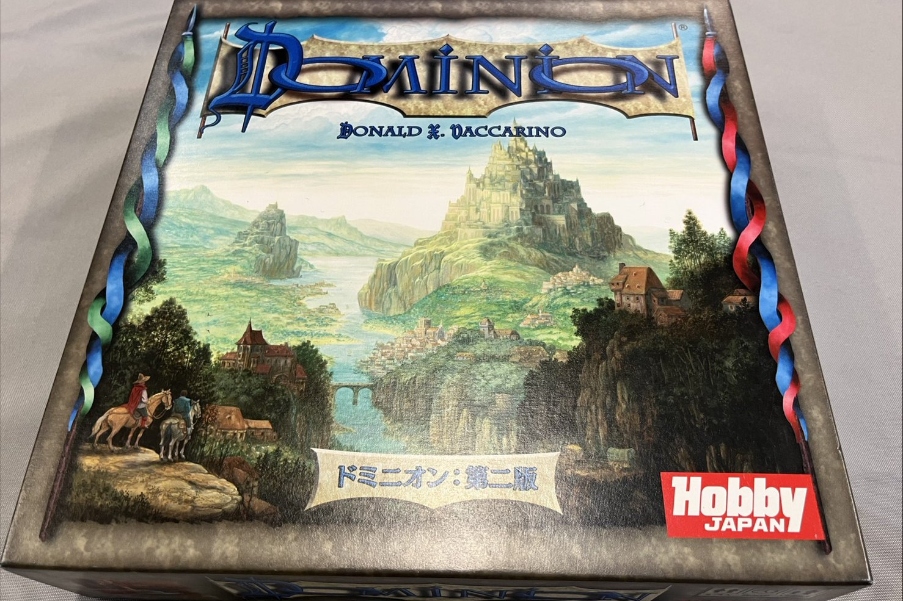

ドミニオン
全員が同じ10枚の山札から始めます。 カードを買って山札に入れ、その山札を回して、また次のカードを買う。 育て方の差だけで勝負がつくゲームです。

どんなゲームか
はじめに配られるのは、全員まったく同じ10枚。 銅貨7枚と屋敷3枚、それだけです。 そこから5枚引いて、手札の銅貨で買えるものを1枚買う。買ったカードは自分の捨て札に置きます。
山札が尽きたら、捨て札を混ぜて新しい山札にします。 つまり買ったカードは、必ずいつか自分の手札に戻ってきます。 銀貨を買えば次の周回は少し豊かになり、そのぶん高いカードに手が届く。 この雪だるまを、誰よりも早く大きくした人が勝ちます。
ただし勝つために必要なのは勝利点カードで、これがくせ者です。 勝利点カードはゲーム中まったく働きません。買った瞬間から、山札を重くするだけのお荷物になります。 強い山札を作りたいのに、勝つには弱いカードを混ぜなければいけない。 いつ切り替えるか——ドミニオンはずっとこの判断を問われ続けます。
2009年のドイツ年間ゲーム大賞を受賞した作品で、 いま数えきれないほどある「デッキ構築ゲーム」の一番最初の1本です。 デザイナーはドナルド・X・ヴァッカリーノ。
Players
2〜4人
2人でもそのまま成立します
Play time
30分ほど
はじめての回は説明を含めて45分ほど
Category
デッキ構築・カードゲーム
盤を使わず、卓の上はカードだけ
Award
ドイツ年間ゲーム大賞
2009年受賞
Rules
説明から入れます
予習は必要ありません
手番でやること
やることは3つだけです。1手番は30秒ほどで終わります。
-
アクションカードを1枚使う
手札にアクションカードがあれば1枚使えます。 カードを3枚引くだけのもの、他のプレイヤーに手札を捨てさせるもの、 使うと追加でもう1回アクションできるもの。効果はカードに全部書いてあります。 使えるカードがなければ、飛ばして構いません。
-
カードを1枚買う
手札の財宝を出して、その合計で買えるカードを1枚選びます。 銀貨は3、金貨は6、属州は8。 買ったカードは使わずに捨て札へ置きます。 今すぐ使えないのがもどかしいところですが、次の周回で必ず手札に来ます。
-
全部捨てて、5枚引く
手札も場に出したカードも、残らず捨て札に置いて、山札から5枚引いて手番終了。 山札が足りなくなったら、捨て札を混ぜてそれが新しい山札です。 ここで買ったカードが混ざり、山札の中身が少しずつ変わっていきます。
-
属州が尽きたら終わり
いちばん高い勝利点カード「属州」の山が尽きるか、 場に並んだカードの山が3種類なくなった時点でゲーム終了。 全員の山札をひっくり返して、勝利点を数えます。 手札の強さは点になりません。最後に残るのは勝利点だけです。
いつでも買えるカード
| カード | 値段 |
|---|---|
| 銀貨 2コインぶんの財宝 | 3 |
| 金貨 3コインぶんの財宝 | 6 |
| 屋敷 1勝利点。最初から3枚持っています | 2 |
| 公領 3勝利点 | 5 |
| 属州 6勝利点。この山が尽きると終了 | 8 |
毎回変わる10種類
上の6種類は毎回かならず場に並びます。 そこに「王国カード」が10種類加わって、その日のサプライができあがります。
第二版には王国カードが26種類あり、そこから毎回10種類だけを選びます。 10種類の顔ぶれが変われば、狙うべき買い物も変わります。 前に覚えた手順がそのまま通る日は、ほとんどありません。
だから同じ戦い方は二度通りません。 前回うまくいった買い方が、今日は最善ではない。 短いゲームなのに何度も遊ばれているのは、これが理由です。
はじめての方へ、5つだけ
覚えてこなくて構いません。卓についてから思い出せば十分です。
- 序盤は迷わず銀貨。最初の2手番で買えるものは限られます。悩む時間より、山札を太らせるほうが効きます
- アクションカードは入れすぎない。1手番に使えるのは基本1枚だけ。手札にダブつくと、ただの紙になります
- 屋敷を早く買わない。1点のために山札が1枚重くなります。序盤の屋敷は、たいてい足を引っぱります
- 属州が3枚くらい減ったら切り替えどき。そこから先は点を取りにいく時間。粘りすぎると数え負けます
- 他の人の買い物を見ておく。属州の残りが読めます。終わりが見えると、自分の1手も変わります
WOLF で遊ぶなら
1本30分ほど。ふたりで来られた日にそのまま成立するのが、このゲームのいちばんありがたいところです。 人数がそろわなくても卓が立ちます。
短いので、たいてい1回では終わりません。 「さっきの買い方が悪かった」と言いながらもう1回、が普通に起きるゲームです。 当店は朝8時半まで営業しているので、その「もう1回」に時間の制限がありません。
ルール説明はこちらでします。読み込んでくる必要はありません。 はじめての方へに当日の流れをまとめています。
よくある質問
ルールを知らなくても遊べますか。
遊べます。遊び方の説明から入りますので、予習は必要ありません。全員がはじめてでも成立します。
2人でも遊べますか。
遊べます。2〜4人用なので、おふたりでもそのまま成立します。人数がそろわない日にいちばん出番の多いゲームです。
どれくらい時間がかかりますか。
30分ほどです。はじめての回は説明を含めて45分ほど見ておくと安心です。短いので、続けて2回、3回と遊ぶ方が多いゲームです。
予約は必要ですか。
予約なしでもご来店いただけます。人数が決まっている場合はInstagram（@bodoge.wolf）のDMからご連絡いただけると確実です。
料金はいくらですか。
エントランス1,000円＋1時間ごとのチャージ1,000円（飲み放題付き）です。学生の方は別料金があります。くわしくは料金ページをご覧ください。
「ドミニオンやりたいです」と言っていただければ、あとはこちらで整えます。